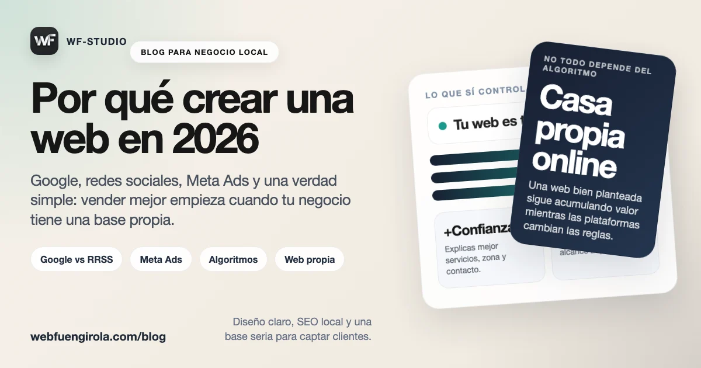

Crear una web en 2026 no es una moda ni un capricho técnico. Es, sobre todo, una forma de tener una base propia para explicar bien lo que haces, aparecer cuando alguien te busca y no depender cada semana de lo que decida una red social.
Las redes siguen siendo útiles, claro. Pero una web cumple otra función. No compite con ellas: las ordena, las aterriza y convierte la atención en una oportunidad real de contacto.
La principal ventaja: tu web es tu casa
En redes estás en terreno prestado. Hoy puedes tener alcance y mañana no. Tu cuenta puede crecer, frenarse o quedarse invisible por un cambio de algoritmo que ni entiendes ni controlas. En tu web pasa lo contrario: el espacio es tuyo, el mensaje es tuyo y decides cómo presentarte.
Eso permite algo muy importante para un negocio local: dar una imagen más seria. Cuando alguien entra en una web bien hecha entiende mejor tus servicios, tus precios orientativos, tu forma de trabajar y cómo contactar contigo. Hay menos ruido y más claridad.
Una red social puede llamar la atención. Una web bien pensada ayuda a convertir esa atención en confianza y contacto.
Google y redes sociales no juegan al mismo juego
Esta diferencia es importante. En redes sociales la gente normalmente está entreteniéndose, pasando el rato o consumiendo contenido rápido. En Google, en cambio, muchas veces hay intención directa: “fisio en Fuengirola”, “diseñador web para negocio local”, “entrenador personal cerca”.
Eso hace que el tráfico de Google, aunque a veces sea menor en volumen, tenga mucha más calidad comercial. No es lo mismo que alguien te vea por casualidad en un reel que encontrarte justo cuando necesita lo que ofreces.
Por eso una web y el SEO local siguen teniendo tanto valor. No solo te encuentran. Te encuentran con contexto y con una necesidad ya activa.
El problema de vender solo con redes
Durante años mucha gente ha vendido bastante bien por Instagram o Facebook. Pero ese escenario ya no es tan fácil. El alcance orgánico lleva tiempo cayendo, la atención está más fragmentada y cada vez hace falta publicar más para conseguir menos.
Además, una cosa es tener likes o comentarios y otra muy distinta vender. El engagement puede dar sensación de movimiento, pero no siempre significa negocio. Hay perfiles con mucho ruido y pocas conversiones, y negocios discretos con una web sencilla que cierran clientes todas las semanas.
Meta Ads funciona, pero te obliga a pagar por seguir visible
La publicidad en Meta puede funcionar muy bien si se hace con estrategia. No hay nada malo en pagar anuncios. El problema llega cuando todo depende de eso. Si cada contacto nuevo necesita inversión constante, el sistema se vuelve más frágil.
En muchos casos, el “engagement” orgánico ya no sostiene ventas como antes y Meta te empuja a promocionar si quieres mantener alcance. Es decir: alquilas visibilidad una y otra vez. Una web, en cambio, acumula valor con el tiempo. Una página bien enfocada hoy puede seguir trayendo contactos dentro de meses.
Los algoritmos cambian, y a veces son bastante injustos
No hace falta dramatizarlo. Pero sí conviene decirlo claro: los algoritmos son inestables. Un contenido puede funcionar genial una semana y hundirse la siguiente sin que tú hayas hecho nada “mal”. A veces premian formatos concretos, a veces penalizan enlaces externos, a veces simplemente cambian la distribución.
Para un negocio pequeño, eso desgasta mucho. Sientes que tienes que estar adaptándote siempre a reglas que no has elegido. Y mientras tanto, el mensaje importante de tu negocio queda mezclado con tendencias, música, filtros y formatos pasajeros.
Entonces, ¿todo son ventajas?
No. Una web también tiene desventajas y es mejor decirlo así.
Ventajas
- Es un activo propio que controlas.
- Te ayuda a posicionarte en Google y en búsquedas locales.
- Da más confianza que un perfil social aislado.
- Ordena tus servicios y facilita el contacto.
- Puede seguir generando visitas y leads con el tiempo.
Desventajas
- Necesita una inversión inicial.
- Hay que mantenerla mínimamente actualizada.
- No da resultados mágicos en dos días.
- Si está mal planteada, puede quedar bonita pero no vender.
La conclusión realista es esta: una web no sustituye por completo a las redes, pero te quita dependencia. Y eso, en 2026, vale muchísimo.
Cada vez más personas usan IA para encontrar servicios
Hay otro cambio importante en marcha. Mucha gente ya no busca solo en Google. También pregunta a herramientas como ChatGPT, Gemini o Perplexity cuando quiere comparar opciones o entender qué servicio necesita. Eso significa que tener una presencia web clara, bien estructurada y fácil de interpretar será cada vez más importante.
Lo desarrollamos mejor en este artículo relacionado: Sabías que cada vez más gente usa IA para encontrar un servicio.
Y si quieres aterrizar esta idea a búsquedas locales reales, también te puede servir la guía sobre SEO local en Fuengirola y Málaga con apoyo de publicidad e IA.
Puedes tener una base seria sin irte a un proyecto enorme
Para muchos negocios locales, lo importante no es hacer “la web perfecta”, sino salir bien, rápido y con una estructura que sí ayude a captar.
En resumen
Si tu negocio depende solo de redes sociales, estás demasiado expuesto a plataformas que cambian las reglas cuando quieren. Una web no elimina todos los problemas, pero sí te da una base mucho más estable, profesional y útil para vender. Y eso, ahora mismo, no va de moda: va de sentido común.